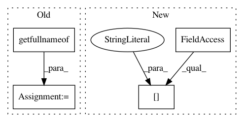

d756331fb7df294e1787a7240f51597cb0559a3c,PyInstaller/hooks/hook-PySide2.QtNetwork.py,,,#,18
Before Change
print(QSslSocket.supportsSsl()))):
rel_data_path = ["."]
binaries += [
// Per http://doc.qt.io/qt-5/ssl.html//enabling-and-disabling-ssl-support,
// the SSL libraries are dynamically loaded, implying they exist in
// the system path. Include these.
(getfullnameof("libeay32.dll"), os.path.join(*rel_data_path)),
(getfullnameof("ssleay32.dll"), os.path.join(*rel_data_path)),
]
After Change
for dll in ("libeay32.dll", "ssleay32.dll", "libssl-1_1-x64.dll",
"libcrypto-1_1-x64.dllx"):
dll_path = os.path.join(
pyside2_library_info.location["BinariesPath"], dll)
if os.path.exists(dll_path):
binaries.append((dll_path, "."))
In pattern: SUPERPATTERN
Frequency: 3
Non-data size: 4
Instances
Project Name: pyinstaller/pyinstaller
Commit Name: d756331fb7df294e1787a7240f51597cb0559a3c
Time: 2019-11-12
Author: me@systemcluster.me
File Name: PyInstaller/hooks/hook-PySide2.QtNetwork.py
Class Name:
Method Name:
Project Name: pyinstaller/pyinstaller
Commit Name: efbfb971fb2bdf6d04df208df437deea15c434a5
Time: 2019-07-31
Author: bjones@ece.msstate.edu
File Name: PyInstaller/utils/hooks/qt.py
Class Name:
Method Name: add_qt5_dependencies
Project Name: pyinstaller/pyinstaller
Commit Name: 47bd7f10de3b343270fd4d34b356f14617d5d3a1
Time: 2019-08-01
Author: bjones@ece.msstate.edu
File Name: PyInstaller/hooks/hook-PyQt5.QtNetwork.py
Class Name:
Method Name: